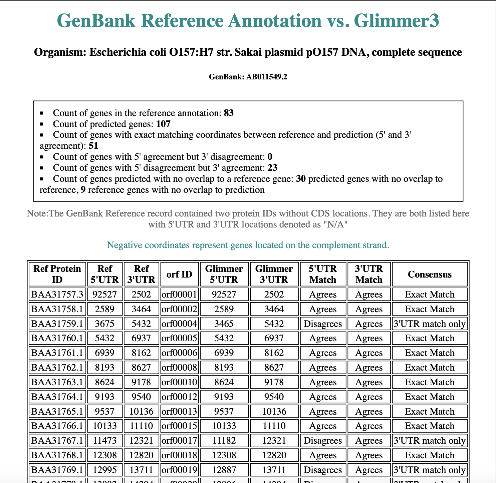
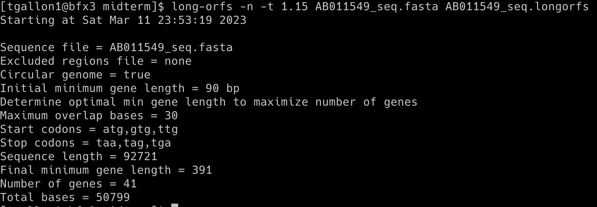

Glimmer was used to predict the genes of a plasmid of the model organism Escherichia coli O157:H7 str. Sakai plasmid pO157 DNA, and the results were then compared with the annotations from GenBank. A CGI script was used to read both the GenBank (reference) annotation and predicted output from Glimmer, and the results were populated in an HTML5-compliant template.
The output includes summary information at the top, including the count of genes in the reference annotation, the count of predicted genes, the count of genes with exact matching coordinates between reference and prediction (5' and 3' agreement), the count of genes with 5' agreement but 3' disagreement, the count of genes with 5' disagreement but 3' agreement, and the count of genes predicted with no overlap to a reference gene. Additionally, a table is displayed showing all gene coordinates of the reference annotation and the corresponding (overlapping) predicted coordinates. Attributes of 'agrees' or 'disagrees’ are applied when compared to the reference coordinates, and a consensus field is generated.
Escherichia coli O157:H7 str. Sakai plasmid pO157 DNA, complete sequence: AB011549.2 Glimmer (Gene Locator and Interpolated Markov ModelER) is a Unix-based program used to locate bacterial genes with 99% sensitivity (1). Glimmer identifies coding sequences using interpolated Markov models (IMMs), which make predictions based on a linear combination of probabilities from oligomers of varying lengths. In general, longer oligomers have higher predictive value if sufficient data is available. Glimmer uses Markov models from the 1st through 8th orders and assesses which order to use based on oligomer frequency, giving a higher weight to frequently occurring oligomers. Glimmer uses longer oligomers when possible and creates IMMs for the possible reading frames, which are then used to score orfs and determine coding sequences. Glimmer’s use of IMM is advantageous over other programs, such as GeneMark, which uses a fixed-order Markov model. GenMark uses a 5th-order Markov model, predicting nucleotides based on the five previous ones, and may result in unreliable predictions if the 5mer does not frequently occur (2).
The Glimmer3 system was downloaded, and the file was decompressed using the following command: tar xzf glimmer302b.tar.gz
Running the command above creates a directory called glimmer3.02
The glim302notes.pdf file contains the documentation for running Glimmer.Commands used to run glimmer3
long-orfs -n -t 1.15 AB011549_seq.fasta AB011549_seq.longorfs

extract -t AB011549_seq.fasta AB011549_seq.longorfs > AB011549_seq.train
build-icm -r AB011549_seq.icm < AB011549_seq.train
glimmer3 -o50 -g110 -t30 AB011549_seq.fasta AB011549_seq.icm AB011549_seq
extract -t AB011549_seq.fasta AB011549_seq.predict > AB011549_seq.glimmer